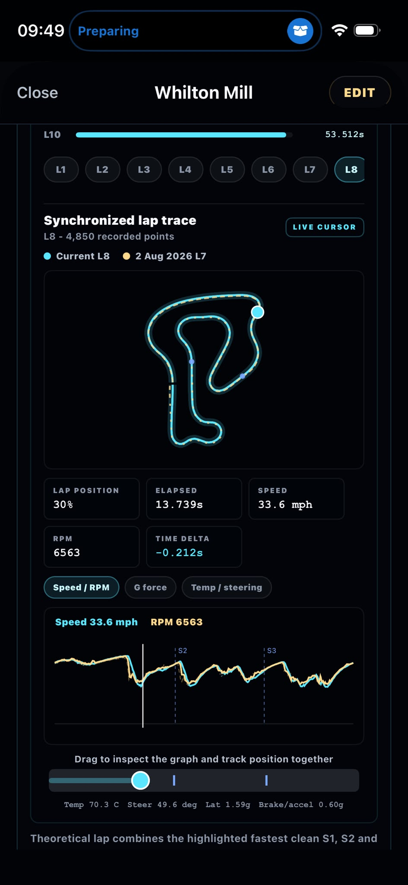

01 / PLAN
Race-weekend calendar
Build events and planned sessions with checklists, reminders, daily forecasts and session-specific hourly weather.
Karting data · telemetry · race prep
Plan the weekend. Analyse every lap. Remember what worked.
One focused place for race calendars, kart setup, UniPro logger data, lap comparison, onboard replay, engine life, fitness, and season progress.
Created by JH43 Racing.

From calendar to chequered flag
RaceMetric connects preparation, setup memory and logger analysis so useful information does not disappear between sessions.
01 / PLAN
Build events and planned sessions with checklists, reminders, daily forecasts and session-specific hourly weather.
02 / RECORD
Keep circuit, kart, tyres, pressures, gearing, conditions, results, setup changes, notes and photos together.
03 / IMPORT
Import native .uni sessions and TSV/CSV exports for lap times, sectors, GPS, speed, RPM and available sensor channels.
04 / ANALYSE
Review every lap, theoretical pace, trends, racing lines and synchronized telemetry at the exact point on track.
05 / COMPARE
Compare saved sessions, laps, sectors, GPS lines and telemetry with clear current and reference traces.
06 / MANAGE
Track engine runtime and rebuild targets alongside track records, season statistics, fitness and reaction training.
Telemetry that stays connected to the track
Scrub or play through a lap while the cursor moves across the telemetry graph and GPS trace. Compare another saved lap at the same track position, then zoom in to inspect the racing line.
Available detail depends on the channels recorded in the selected logger file.

A repeatable race-weekend workflow
Use the calendar, weather, reminders and event checklist to keep the weekend organised.
Record pressures, gearing, tyres, notes and photos while the detail is still fresh.
Import logger data, compare laps and sessions, review video, and carry the lesson into the next run.
App preview


Local-first by design
RaceMetric works without an account and stores sessions, logger data, notes, photos, onboard footage, fitness entries and preferences on the device. Backup and sharing happen only when you choose them.
The app may download read-only track-record data and request optional Open-Meteo forecasts. It does not upload your saved RaceMetric records to a developer-operated account system.
Read the full privacy policy →